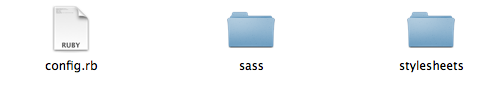

几个月前，我介绍了Sass的用法。
Sass是一种"CSS预处理器"，可以让CSS的开发变得简单和可维护。但是，只有搭配Compass，它才能显出真正的威力。
本文介绍Compass的用法。毫不夸张地说，学会了Compass，你的CSS开发效率会上一个台阶。
本文假设你已经掌握了CSS的主要用法，如果你还懂Sass，那就更好了。但是不懂Sass，一样可以阅读本文。
一、Compass是什么？
简单说，Compass是Sass的工具库（toolkit）。
Sass本身只是一个编译器，Compass在它的基础上，封装了一系列有用的模块和模板，补充Sass的功能。它们之间的关系，有点像Javascript和jQuery、Ruby和Rails、python和Django的关系。
二、安装
Compass是用Ruby语言开发的，所以安装它之前，必须安装Ruby。
假定你的机器（Linux或OS X）已经安装好Ruby，那么在命令行模式下键入：
sudo gem install compass
如果你用的是Windows系统，那么要省略前面的sudo。
正常情况下，Compass（连同Sass）就安装好了。
三、项目初始化
接下来，要创建一个你的Compass项目，假定它的名字叫做myproject，那么在命令行键入：
compass create myproject
当前目录中就会生成一个myproject子目录。
进入该目录：
cd myproject
你会看到，里面有一个config.rb文件，这是你的项目的配置文件。还有两个子目录sass和stylesheets，前者存放Sass源文件，后者存放编译后的css文件。

接下来，就可以动手写代码了。
四、编译
在写代码之前，我们还要知道如何编译。因为我们写出来的是后缀名为scss的文件，只有编译成css文件，才能用在网站上。
Compass的编译命令是
compass compile
该命令在项目根目录下运行，会将sass子目录中的scss文件，编译成css文件，保存在stylesheets子目录中。
默认状态下，编译出来的css文件带有大量的注释。但是，生产环境需要压缩后的css文件，这时要使用--output-style参数。
compass compile --output-style compressed
Compass只编译发生变动的文件，如果你要重新编译未变动的文件，需要使用--force参数。
compass compile --force
除了使用命令行参数，还可以在配置文件config.rb中指定编译模式。
output_style = :expanded
:expanded模式表示编译后保留原格式，其他值还包括:nested、:compact和:compressed。进入生产阶段后，就要改为:compressed模式。
output_style = :compressed
也可以通过指定environment的值（:production或者:development），智能判断编译模式。
environment = :development
output_style = (environment == :production) ? :compressed : :expanded
在命令行模式下，除了一次性编译命令，compass还有自动编译命令
compass watch
运行该命令后，只要scss文件发生变化，就会被自动编译成css文件。
更多的compass命令行用法，请参考官方文档。
五、Compass的模块
Compass采用模块结构，不同模块提供不同的功能。目前，它内置五个模块：
* reset
* css3
* layout
* typography
* utilities
下面，我依次介绍这五个内置模块。它们提供Compass的主要功能，但是除了它们，你还可以自行加载网上的第三方模块，或者自己动手编写模块。
六、reset模块
通常，编写自己的样式之前，有必要重置浏览器的默认样式。
写法是
@import "compass/reset";
上面的@import命令，用来指定加载模块，这里就是加载reset模块。编译后，会生成相应的css reset代码。
七、CSS3模块
目前，该模块提供19种CSS3命令。在这里，我介绍其中的三种：圆角、透明和行内区块。
7.1 圆角
圆角（border-radius）的写法是
@import "compass/css3";
.rounded {
@include border-radius(5px);
}
上面的@include命令，表示调用某个mixin（类似于C语言的宏），5px是参数，这里用来指定圆角的半径。
编译后的代码为
.rounded {
-moz-border-radius: 5px;
-webkit-border-radius: 5px;
-o-border-radius: 5px;
-ms-border-radius: 5px;
-khtml-border-radius: 5px;
border-radius: 5px;
}
如果只需要左上角为圆角，写法为
@include border-corner-radius(top, left, 5px);
7.2 透明
透明（opacity）的写法为
@import "compass/css3";
#opacity {
@include opacity(0.5);
}
编译后生成
#opacity {
filter: progid:DXImageTransform.Microsoft.Alpha(Opacity=0.5);
opacity: 0.5;
}
opacity的参数0.5，表示透明度为50%。
完全透明的写法是
@include opacity(0);
完全不透明则是
@include opacity(1);
7.3 行内区块
行内区块（inline-block）的写法为
@import "compass/css3";
#inline-block {
@include inline-block;
}
编译后生成
#inline-block {
display: -moz-inline-stack;
display: inline-block;
vertical-align: middle;
*vertical-align: auto;
zoom: 1;
*display: inline;
}
八、layout模块
该模块提供布局功能。
比如，指定页面的footer部分总是出现在浏览器最底端：
@import "compass/layout";
#footer {
@include sticky-footer(54px);
}
又比如，指定子元素占满父元素的空间：
@import "compass/layout";
#stretch-full {
@include stretch;
}
九、typography模块
该模块提供版式功能。
比如，指定链接颜色的mixin为：
link-colors($normal, $hover, $active, $visited, $focus);
使用时写成：
@import "compass/typography";
a {
@include link-colors(#00c, #0cc, #c0c, #ccc, #cc0);
}
十、utilities模块
该模块提供某些不属于其他模块的功能。
比如，清除浮动：
import "compass/utilities/";
.clearfix {
@include clearfix;
}
再比如，表格：
@import "compass/utilities";
table {
@include table-scaffolding;
}
编译后生成
table th {
text-align: center;
font-weight: bold;
}table td,
table th {
padding: 2px;
}table td.numeric,
table th.numeric {
text-align: right;
}
十一、Helper函数
除了模块，Compass还提供一系列函数。
有些函数非常有用，比如image-width()和image-height()返回图片的宽和高。
再比如，inline-image()可以将图片转为data协议的数据。
@import "compass";
.icon { background-image: inline-image("icon.png");}
编译后得到
.icon { background-image: url('data:image/png;base64,iBROR...QmCC');}
函数与mixin的主要区别是，不需要使用@include命令，可以直接调用。